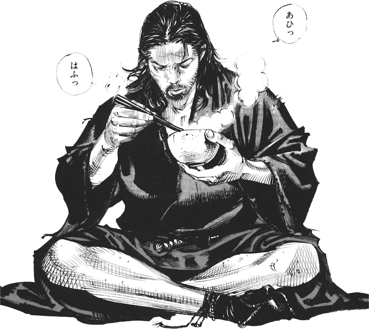
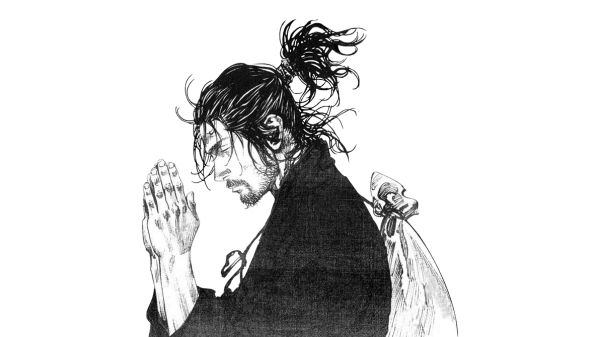
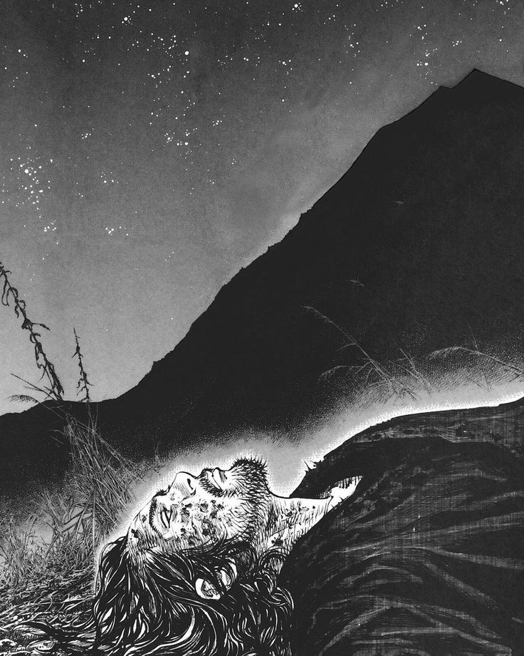

La vida es, difícil; la vida es una serie de acontecimientos que cada vez se vuelven mas y mas complicados al pasar de los años, y es abrumador. Es tan abrumador que llegamos al punto en donde ya no queremos movernos, donde nos da miedo lo que vaya a pasar si hacemos algo, donde nos aterra lo desconocido y el futuro es una pesadilla incierta. Mas toda esta incertidumbre es correcta en la vida, nos hace apreciar los pequeños momentos que hay alrededor nuestro, las risas, los abrazos, las personas, y son detalles tan pequeños que no percibimos que hacen nuestra vida, grandiosa.
Mas nosotros para darnos cuenta de estos detalles, de estos momentos, del poder apreciar todo a nuestro alrededor, y vivir más plenos no solo con los demás, pero con nosotros mismos; debe de haber tres momentos cruciales en la vida de una persona para que pueda crecer. Deben de existir tres momentos que nos pongan a prueba mas que nunca en nuestra vida, y nos rompan, y nos hagan crecer tanto en el corazón, en el alma, y la mente.
Alma
El alma va muy relacionado con las creencias de uno mismo, con el creer en algo, en alguien, y en un significado. Y no hay manera más sencilla de romper esto, más que con la muerte. La primera vez que alguien importante muere ante nosotros, es un momento de desesperación, de tristeza, de frustración, donde buscamos confort en los recuerdos, en la memoria, en el pasado, en la persona que yace frente a nosotros que ya no está. Y es algo que no queremos enfrentar, mas es necesario entender todo lo que ocurre en esta situación, duele, y quedamos muy heridos, pierdes hasta perder tu religión.
Y es en esta pequeña mortalidad nuestra, que nos damos cuenta de cómo es que podemos apreciar de no solo la gente que nos rodea, pero de cómo es que cada interacción que tenemos en este mundo nos cambia y nos van formando en nuestra vida; y cómo es que al final la vida que tenemos, no la podemos vivir por alguien más, no por otra persona, no por una nación, y tampoco por un dios que no podemos ver.
La vida que tenemos, la tenemos que vivir por nosotros mismos, y no por nadie más. Hacer cosas que nos gustan, apuntar a objetivos que solo nosotros podemos entender, y cumplir metas que nos llenen a nosotros. Esa es la belleza de un alma que vive por sí misma.

Mente
La manera mas sencilla de romper una mente, es con el más profundo de nuestros miedos y nuestra imaginación. Y no puede haber peor miedo, que el de existir. Hay momentos en nuestras vidas donde nos damos cuenta de cosas, como es que cada quien tiene una vida diferente a la nuestra, como el pasado de cada quien infiere en quienes son hoy, lo que en realidad significa un regalo.
Pero no hay mayor realización, que el de la mortalidad; cuando te das cuenta de lo pequeño que eres comparado a todo, como las risas, los pequeños momentos, la vida es solo una pequeña gota de agua en el mar que es existir. Como el vivir, el existir es sólo algo pequeño a comparación de todo. Y todos nos vamos a ir en un abrir y cerrar de ojos, y las personas que quieres, y las personas que amas no serán nada más que un recuerdo del polvo que es la vida.
Y eso es deprimente, es triste, porque tienes que aceptar todo lo malo que es vivir, para darte cuenta que es bello. No todo lo que vive dura, no todo lo que existe es perfecto, pero en este pequeño momento en el que estamos parados bajo el mismo sol, tenemos la bendición de experimentar amor, dolor, tristeza, felicidad, y está bien que dure, y está bien que acabe.
El aceptar la muerte, y aceptar tu mortalidad, es liberar tu mente y tu ego de quien ocupas, y aceptar quien eres ahora, y entender el ahora. No podemos controlar lo que no nos corresponde, pero sí la manera en la que vivimos y pensamos, y el pensar, aceptar, y valorar el ahora en vez del ayer y del mañana. Es la cosa más sabia que podemos entender en nuestra vida.

Corazon
El amar es la cosa más humana que podemos hacer en nuestras vidas, es entregar todo de ti a alguien que tiene su propio mundo. Es el aceptar a una persona por quien es, y cómo es; es el querer, el desear, y el vivir por alguien más. Es felicidad. Y en el momento que te rompen el corazón por primera vez, es el momento donde todo se derrumba. Y solo no quieres ser.
La primera vez que te rompen el corazón es horrible, es la peor cosa que le puede pasar a alguien, porque intentas pensar, razonar, entender una respuesta, algo que te diga ¿que hiciste mal?, ¿que cambio?, ¿por qué sucedió?. Y solo caes en un hoyo del cual no puedes salir, te caes, te derrumbas y duele, todo duele. Buscar alguna solución, algo que te haga sentir igual de bien, una nueva pareja, el alcohol, el recuerdo.
Y nada de esto puede funcionar, porque al final tenemos que darnos cuenta que todo está dentro de nosotros; nuestros sentimientos, nuestra forma de sentir de ser, nuestras reacciones, todo eso somos nosotros, y el amar también. Porque tenemos que amarnos a nosotros mismos, a quienes somos, y a lo que aspiramos a ser, pero poder dar amor. Está bien llorar, esta bien sufrir, porque es normal y somos humanos, se vale estar roto, porque ocupamos sentir. Pero de la misma manera ocupamos mejorar por nosotros mismos, la gente va y viene, y al final nosotros somos los que quedamos, y nosotros somos los que amamos y decidimos amar, porque somos perfectos.
Tenemos que crecer nosotros mismos, para ser bellos por nosotros, y si llega la persona indicada, sera porque somos grandes, bellos y en nuestra mente, alma, y corazón. Y si no llega. De igual manera seremos altos.

Estos tres apartados creo yo que son de los momentos más importantes que pueden llegar a suceder en la vida de las personas. Nos cambian, y nos moldean a lo que queremos llegar a ser. Nos rompen, nos dejan en el suelo, y nos destruyen completamente, pero igual que un hueso roto, nos rompemos para crecer derechos, más fuertes, y más sabios.